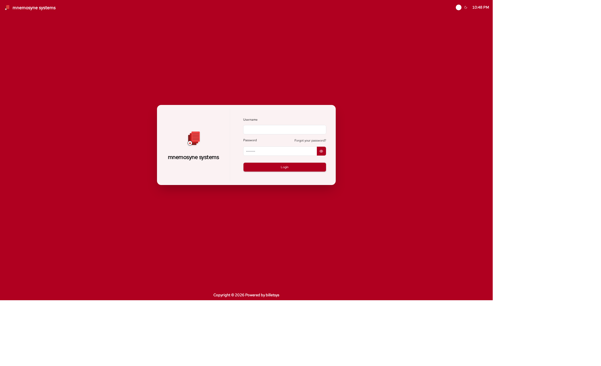

Getting started
This chapter describes how to prepare a local development setup for billetsys using PostgreSQL and how to start the application in development mode.

Requirements
Before you begin, make sure the following tools are available:
- Java 25
- Maven
- PostgreSQL
- Git
PostgreSQL setup
The default local configuration expects a PostgreSQL database named
ticketdb and a database user with username
ticketdb and password ticketdb.
Create the user and database in PostgreSQL:
createuser -P ticketdb
createdb -E UTF8 -O ticketdb ticketdbIf you already have an existing local database and want to recreate it from scratch, you can do:
dropdb ticketdb
createdb -E UTF8 -O ticketdb ticketdbThe application connects to PostgreSQL on localhost:5432
by default. These defaults can be changed through environment variables
such as DB_HOST and DB_PORT if needed.
Get the source code
Clone the repository and enter the project directory:
git clone https://github.com/mnemosyne-systems/billetsys.git
cd billetsysStart support services
Billetsys uses a local CAP service for CAPTCHA protection on the password reset flow. Start the support services before starting the application:
make platformThis detects whether you have Podman Compose or Docker Compose and
starts the containers defined in docker-compose.yml. If
neither is installed, the command is skipped with a warning.
Start billetsys
Start the application in Quarkus development mode:
mvn clean quarkus:devOn startup, billetsys will connect to PostgreSQL, update the schema, and load bootstrap data.
The application listens on:
Http://localhost:8080Https://localhost:8443
First login
The seeded development users include the following accounts:
- User:
user1/user1 - User:
user2/user2 - User:
userb/userb - Superuser:
superuser1/superuser1 - Superuser:
superuser2/superuser2 - TAM:
tam1/tam1 - TAM:
tam2/tam2 - Support:
support1/support1 - Support:
support2/support2 - Admin:
admin/admin
Notes
In development mode, billetsys uses mocked outgoing email by default, which makes it easier to test notification flows without configuring a real mail server.